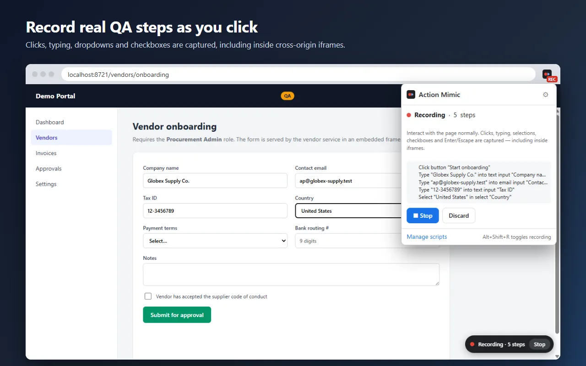
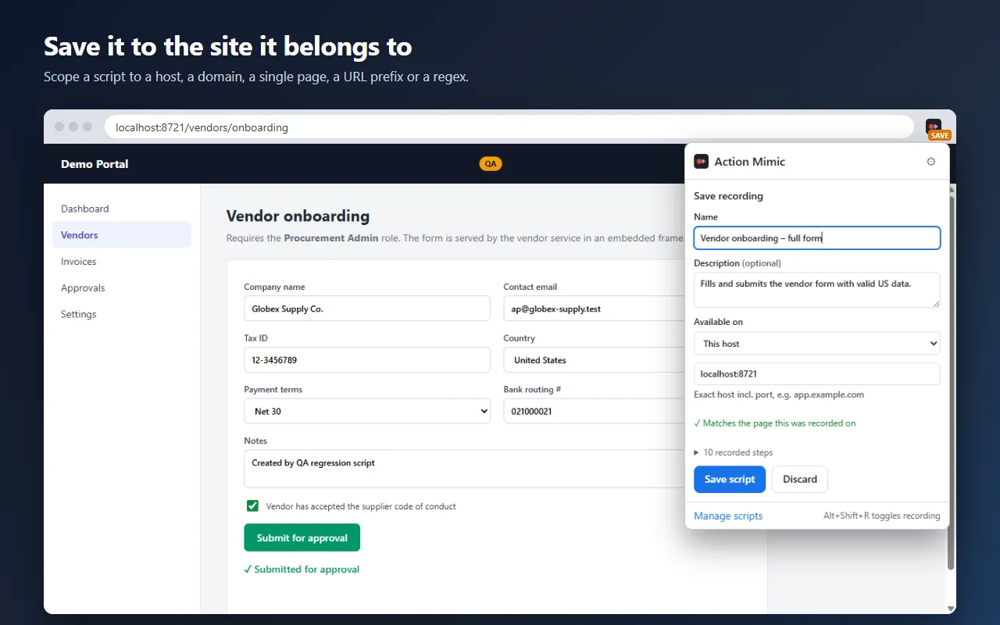
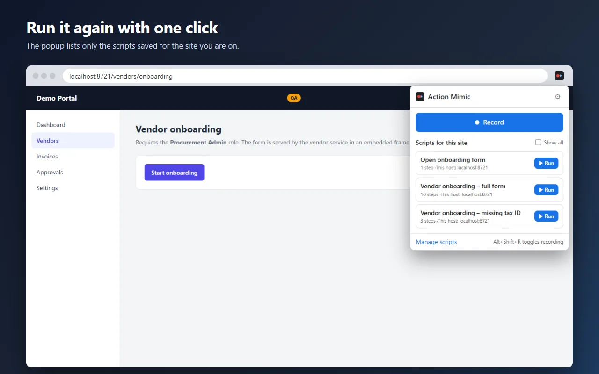
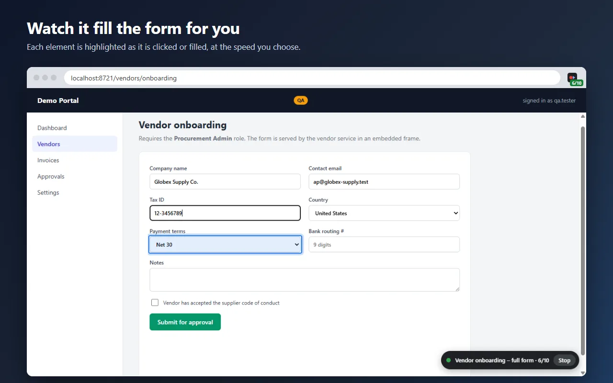
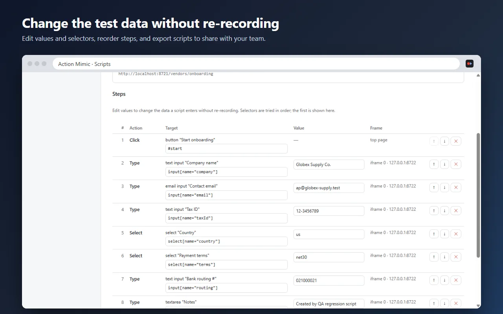

Action Mimic
Record the steps you take on a web page and replay them in one click.
Free, for Chrome 116 or newer. A Chrome Web Store listing is on the way.
Action Mimic is built for QA testers and developers who keep re-entering the same data to reach a hard-to-reproduce state, such as a long form that's only reachable after logging in with the right permissions, or a form embedded in an iframe from another service.
How it works
- Get the page into the state you want to start from.
- Click Record (or press
Alt+Shift+R), then use the page normally. - Click Stop, name the script, and choose which sites it's available on.
- Next time, open Action Mimic on that site and click Run. Every click, keystroke and selection is replayed while you watch, with each element highlighted as it's acted on.





What it records
- Clicks on buttons, links and any other element
- Typing in inputs, text areas and rich-text editors (only the final value of each field is kept)
- Dropdown choices, checkboxes and radio buttons
- Enter and Escape key presses, and URLs you type into the address bar
- All of the above inside iframes, including cross-origin ones, and in open shadow DOM
Install
- Download the .zip and unzip it.
- Open
chrome://extensionsand turn on Developer mode (top right). - Click Load unpacked and pick the unzipped folder, the one containing
manifest.json. - Pin Action Mimic to the toolbar from the puzzle-piece menu.
To update, download the .zip again, replace the folder, and click the reload icon on the extension's card. Your scripts are kept.
Private by design
Everything stays in your browser. There are no accounts, servers, analytics or tracking, and password fields aren't recorded unless you turn that on. Read the privacy policy.